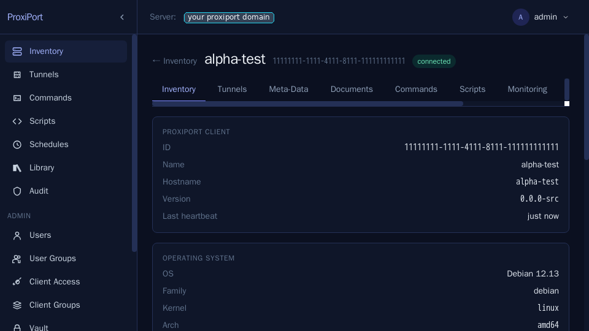
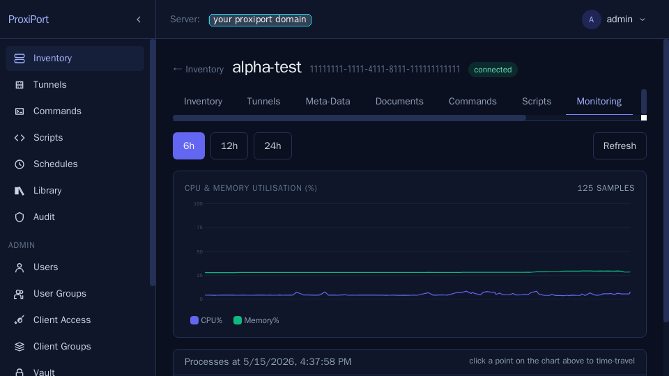
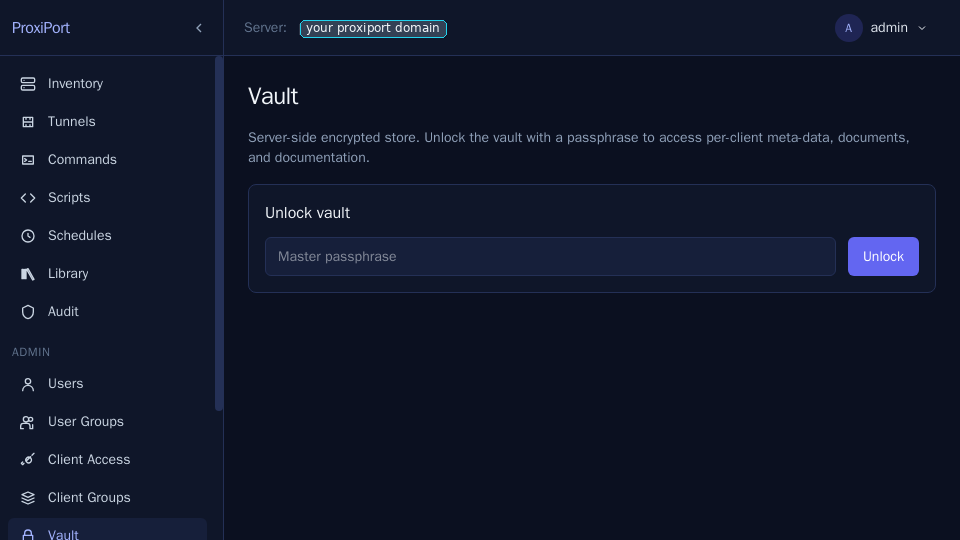
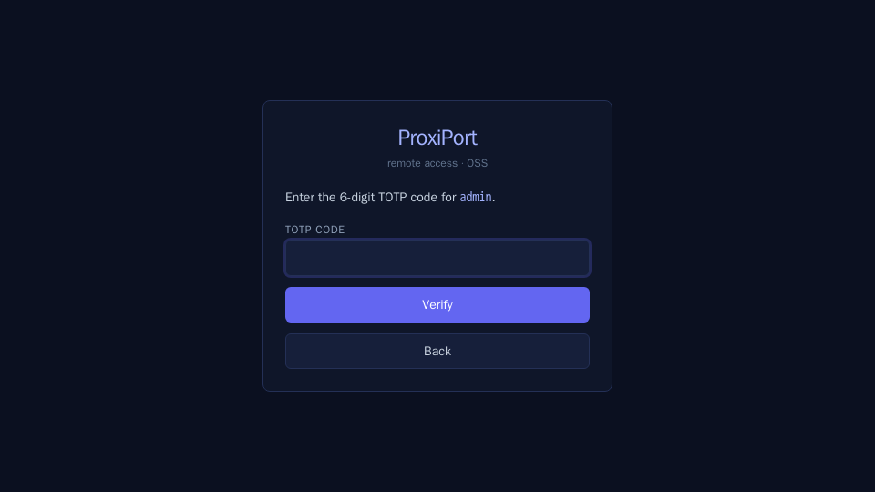

Architecture¶
ProxiPort is a three-tier system: an agent running on each managed host, a server running somewhere the agent can reach, and a web UI served by the server for human admins. There is no required cloud component and no required third-party service.
+---------+ WebSocket over TLS +-----------+
| agent | (typically 443) | server |
+---------+ <---------------------------- | |
chisel control channel | |
| |
+---------+ HTTPS | |
| admin | (typically 443) | REST API |
| browser | <---------------------------- | + SPA |
+---------+ SvelteKit SPA + REST +-----------+
|
| SQLite or
| MySQL
v
+-----------+
| datastore |
+-----------+
proxiportd terminates TLS directly on both listeners — point it at
a cert_file + key_file pair, or turn on the built-in ACME client
for automatic Let's Encrypt certificates. An external reverse proxy
(nginx, Caddy, Traefik) is an option, not a requirement. See
HTTPS for the full deployment matrix.
Server¶
A single Go binary, proxiportd. Responsibilities:
- terminate the chisel control channel from agents on
[server] address(0.0.0.0:80in the seeded config; SSH-over-WS carries its own encryption so no TLS at this layer) - serve the REST API and the SvelteKit SPA on
[api] address(127.0.0.1:3000in the seeded config; production setups switch this to one of the three TLS profiles in HTTPS) - persist clients, users, tunnels, scripts, commands, schedules, and audit records to SQLite (default) or MySQL
- enforce auth (HTTP-Basic for agents on the tunnel port; JWT for the API; optional TOTP second factor)
- multiplex tunnel sessions per connected agent
The server is the only piece that holds state. Agents are otherwise stateless beyond their own configuration.

Agent¶
A single Go binary, proxiport (the agent). Responsibilities:
- open and maintain a chisel WebSocket control channel to the server
- present an identity (client ID + auth credentials) to the server
- accept tunnel requests from the server and open the corresponding local TCP listeners or forward to remote local services
- execute commands and scripts dispatched by the server (when enabled in the agent config) and stream their output back
Agents do not call out to the public internet beyond their server connection. They do not require an inbound port.


Tunnel transport¶
ProxiPort uses the chisel SSH-over-WebSocket transport, inherited from the upstream fork. Each chisel session is one TLS-or-not-TLS WebSocket carrying SSH framing, inside which tunnel sub-channels are multiplexed.
For production deployments, serve both listeners over TLS. The
simplest path is the server's built-in TLS — supply cert_file +
key_file (or enable_acme) under both [server] and [api],
each on the port the agents and operators reach. If you already
operate an nginx, Caddy, or Traefik front-end, you can park
proxiportd on localhost and let the proxy terminate TLS instead;
both shapes are described in HTTPS.
![Tunnel create form — pick the remote target on the agent, the
public scheme, and the ACL gate. The server allocates the public
port from [server] used_ports unless you pin
one.](../screenshots/04-tunnel-create-form.png)


Datastore¶
SQLite is the default and is the right choice for small to medium
deployments (single server, up to a few hundred connected agents). For
larger deployments or for HA setups, MySQL is supported via the existing
upstream db.MySQL driver path.
The vault — an encrypted KV store for documents and per-client secrets — uses a separate SQLite file with passphrase-derived encryption. The passphrase is supplied at vault unlock time and is not persisted server-side.
An optional [key_provider] adds at-rest field encryption for the
recoverable secrets the server must read back on its own: the vault's
stored values and verifier, the totp_secret of database-backed API
users, and — in proxiportd.conf itself — key_seed, jwt_secret,
and the stored credentials. A data-encryption key (DEK) held only in
RAM (loaded from a file or env var; default: none) wraps them so they
are enc:v1:… ciphertext on disk; reads fail closed if the DEK is
absent or wrong, and the server refuses to start rather than run
without a secret it cannot decrypt. This is a second layer independent
of the vault passphrase, aimed at a stolen disk, snapshot, or config
file. See
encrypting the config secrets.

Frontend¶
The web UI is a SvelteKit single-page app served as static assets from
the server's doc_root. It talks to the same REST API the agents'
control plane uses. There is no separate Node runtime in production.
Authentication¶
Three layers:
- HTTP-Basic on the chisel agent port. Agents authenticate to the
server before the control channel comes up. Credentials are
[server] auth = "<client-auth-id>:<password>"(or anauth_file/auth_tableif you prefer). - JWT bearer on the REST API. Login is HTTP-Basic to
/login, which returns a short-lived JWT (default 10 minutes, configurable via?token-lifetime=). The SPA requests a 24-hour lifetime by default. - TOTP second factor is optional; when enabled,
/loginreturns a short-lived intermediate token, and the SPA POSTs the TOTP code to/verify-2fato obtain the final JWT.

All authentication endpoints feed a per-username ban list with a
2-second penalty for failed attempts, which is what produces the
429 too many requests response under brute force or session-expiry
cascades.